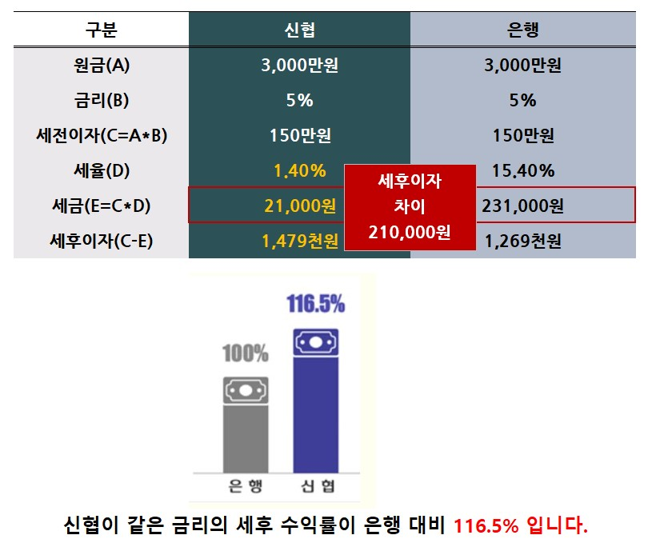

비과세 예적금 가입 안내
▶신협 예적금은 1인당 3,000만원까지 비과세
○ 금리 안내 (교직원게시판 참조,2023.4.3~)
- 거치식예금 _파워정기예탁금 (우대금리):
- 6개월: 3.1%(3.2%)
- 12개월: 3.5%(3.8%)
- 24개월 이상: 3.55%(4.2%)
✨유니온정기예탁 개설하기 →
- 적립식 예금_정기적금(우대금리):
- 12개월: 3.9%(4.5%)
- 24개월이상: 3.95%(4.55%)~
✨유니온정기적금 개설하기 →
✨유니온자유적립적금 개설하기 →
✔ 신협 예.적금의 이자소득세는 비과세로 적용 됩니다.(3천만원 한도)
🔎 신협 비과세(저율) 예적금 VS 은행 이자 비교
 ✨ 신협 VS 은행 차이점 유튜브 영상보기
유튜브 영상보기